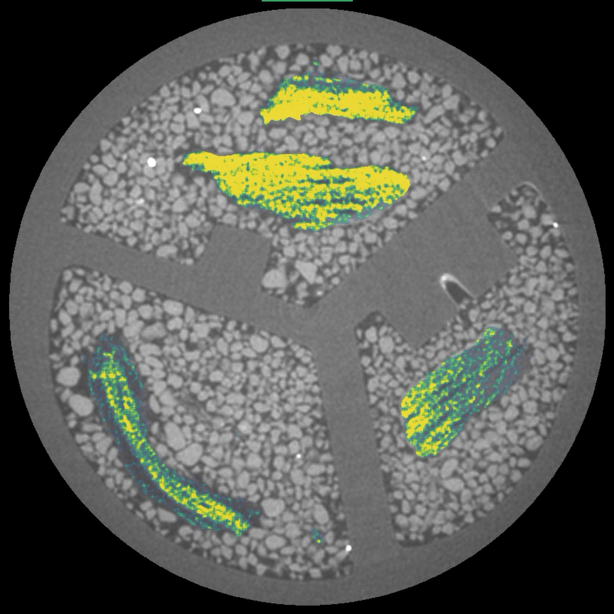

Doctoral programOpen
PhD Candidate
Positions available for doctoral candidates interested in soil physics, biogeochemistry, or advanced imaging methods. Strong quantitative or experimental background preferred.
We are always looking for motivated researchers to join the team. If you are interested in soil science, carbon cycling, imaging techniques, or sustainable agriculture, we encourage you to reach out.
Positions available for doctoral candidates interested in soil physics, biogeochemistry, or advanced imaging methods. Strong quantitative or experimental background preferred.
Master's students with an interest in soil ecology, environmental science, or agricultural systems are welcome to inquire. Projects span field, laboratory, and computational methods.
Postdoctoral opportunities arise periodically. Candidates with expertise in soil science, stable isotope analysis, synchrotron techniques, or related fields are encouraged to reach out proactively.


